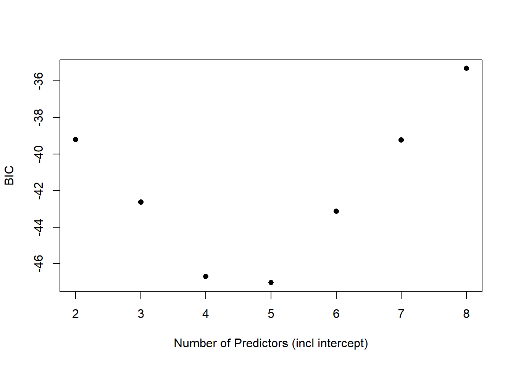
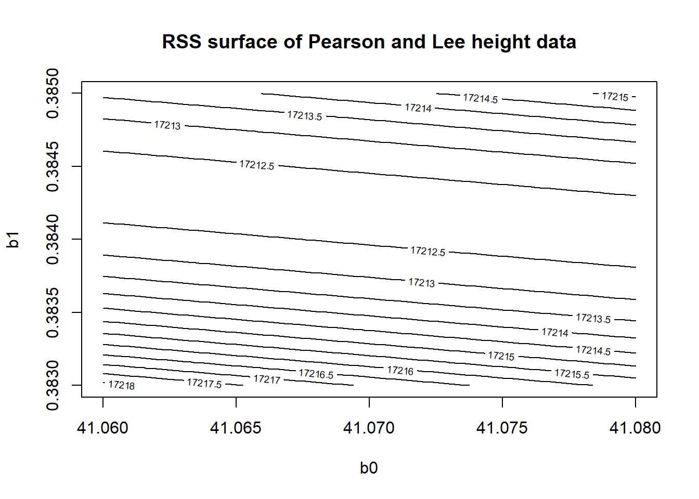
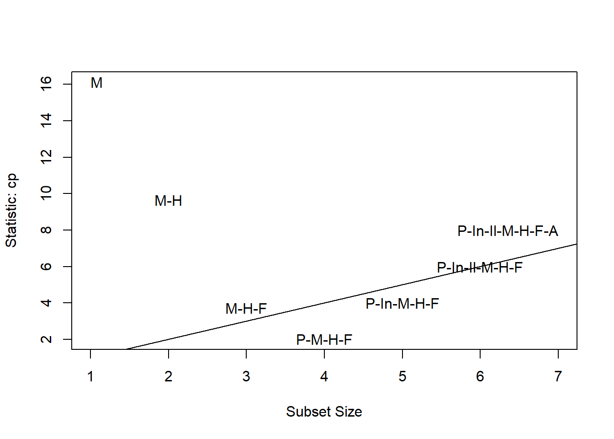

Chapter 19 Recap from Last Class
- Choosing more variables is not always preferable.
- A solid yet simple model is often preferred.
- When deciding how many predictors to include (exclude), its complicated! We should consider several criteria.
19.1 Testing Based Procedures
- Backward elimination is the simplest of all variable selection procedures. We start with all predictors and remove the least significant predictor. Stop once all the noise has been removed.
- Forward selection starts with the null model (only an intercept), and adds regressors one at a time until we can no longer improve the error criterion by adding a single regressor.
- Stepwise regression is a combination of backward elimination and forward selection.
# This handy function does stepwise regression
# Evaluation based on AIC
step(lmod, direction = "both")## Start: AIC=-22.18
## Life.Exp ~ Population + Income + Illiteracy + Murder + HS.Grad +
## Frost + Area
##
## Df Sum of Sq RSS AIC
## - Area 1 0.0011 23.298 -24.182
## - Income 1 0.0044 23.302 -24.175
## - Illiteracy 1 0.0047 23.302 -24.174
## <none> 23.297 -22.185
## - Population 1 1.7472 25.044 -20.569
## - Frost 1 1.8466 25.144 -20.371
## - HS.Grad 1 2.4413 25.738 -19.202
## - Murder 1 23.1411 46.438 10.305
##
## Step: AIC=-24.18
## Life.Exp ~ Population + Income + Illiteracy + Murder + HS.Grad +
## Frost
##
## Df Sum of Sq RSS AIC
## - Illiteracy 1 0.0038 23.302 -26.174
## - Income 1 0.0059 23.304 -26.170
## <none> 23.298 -24.182
## - Population 1 1.7599 25.058 -22.541
## + Area 1 0.0011 23.297 -22.185
## - Frost 1 2.0488 25.347 -21.968
## - HS.Grad 1 2.9804 26.279 -20.163
## - Murder 1 26.2721 49.570 11.569
##
## Step: AIC=-26.17
## Life.Exp ~ Population + Income + Murder + HS.Grad + Frost
##
## Df Sum of Sq RSS AIC
## - Income 1 0.006 23.308 -28.161
## <none> 23.302 -26.174
## - Population 1 1.887 25.189 -24.280
## + Illiteracy 1 0.004 23.298 -24.182
## + Area 1 0.000 23.302 -24.174
## - Frost 1 3.037 26.339 -22.048
## - HS.Grad 1 3.495 26.797 -21.187
## - Murder 1 34.739 58.041 17.456
##
## Step: AIC=-28.16
## Life.Exp ~ Population + Murder + HS.Grad + Frost
##
## Df Sum of Sq RSS AIC
## <none> 23.308 -28.161
## + Income 1 0.006 23.302 -26.174
## + Illiteracy 1 0.004 23.304 -26.170
## + Area 1 0.001 23.307 -26.163
## - Population 1 2.064 25.372 -25.920
## - Frost 1 3.122 26.430 -23.877
## - HS.Grad 1 5.112 28.420 -20.246
## - Murder 1 34.816 58.124 15.528##
## Call:
## lm(formula = Life.Exp ~ Population + Murder + HS.Grad + Frost,
## data = statedata)
##
## Coefficients:
## (Intercept) Population Murder HS.Grad Frost
## 7.103e+01 5.014e-05 -3.001e-01 4.658e-02 -5.943e-0319.2 Search Strategies
An exhaustive search looks at all possible models using all available regressors.
- This is not feasible unless the number of regressors is relatively small.
- If the number of regressors (including the intercept) is \(p\), there are \(2^p\) possible models.
Because of our error criteria, our search often simplifies to finding the model that minimizes \(\mbox{RSS}_{\mathcal{M}}\) for each value of \(p_{\mathcal{M}}\). This is the best subset searching strategy.
19.2.1 Finding the Best Subsets
The leaps package performs a thorough search for the best subsets of predictors for each model size.
- Since the algorithm returns a best model for each size, the results do not depend on the a penalty model (such as AIC and BIC).
- For each model size ,it finds the variables that give the minimum RSS.
- By default,
regsubsetsonly goes up to \(p=9\). You have to setnvmax = j, where \(j\) is the number of regressors you want to consider.
# may need to install.package the first time
library(leaps) # you need to load package every time you want to use it
# model selection by best subset search
best <- regsubsets(Life.Exp ~ ., data = statedata)
bsum <- summary(best) # summarize model that minimizes RSS for each p
bsum$which # nicer output## (Intercept) Population Income Illiteracy Murder HS.Grad Frost Area
## 1 TRUE FALSE FALSE FALSE TRUE FALSE FALSE FALSE
## 2 TRUE FALSE FALSE FALSE TRUE TRUE FALSE FALSE
## 3 TRUE FALSE FALSE FALSE TRUE TRUE TRUE FALSE
## 4 TRUE TRUE FALSE FALSE TRUE TRUE TRUE FALSE
## 5 TRUE TRUE TRUE FALSE TRUE TRUE TRUE FALSE
## 6 TRUE TRUE TRUE TRUE TRUE TRUE TRUE FALSE
## 7 TRUE TRUE TRUE TRUE TRUE TRUE TRUE TRUE# What output is stored after running regsubsets
summary(bsum)## Length Class Mode
## which 56 -none- logical
## rsq 7 -none- numeric
## rss 7 -none- numeric
## adjr2 7 -none- numeric
## cp 7 -none- numeric
## bic 7 -none- numeric
## outmat 49 -none- character
## obj 28 regsubsets list19.3 Review of Criterion-Based Procedures Thus Far
RSS (and \(R^2\)) is a measurement of the error between the data and a model.
RSS will decrease when we add more predictors, regardless if they predict anything.
Therefore \(R^2 = 1 - \mbox{RSS}/\mbox{TSS}\) increases, regardless.
\(p\)-values should not be taken as very accurate in stepwise or best subset searches because we’ll see small \(p\)-values due to chance alone.
So we shouldn’t just consider RSS or \(R^2\)since we’ll always choose the most complicated model.
We shouldn’t just consider \(p\)-values since we will always get false positives.
We only want to add predictors if they significantly help improve the prediction.
19.4 Akaike’s Information Criterion (AIC) and Bayesian Information Criteria (BIC)
\[\mbox{AIC}(\mathcal{M})= n\log{(\mbox{RSS}_{\mathcal{M}}/n)} +2p_{\mathcal{M}} +c.\] \[\mbox{BIC}(\mathcal{M})= n\log{(\mbox{RSS}_{\mathcal{M}}/n)} + \log{(n)} p_{\mathcal{M}} +c.\]
- Both AIC and BIC are criteria that balance fit and complexity.
- As \(RSS\) goes down (yay!), AIC and BIC goes down.
- As \(p_{\mathcal{M}}\) goes up, there is a penalty for making things more complicated.
- BIC assigns a bigger penalty for adding more predictors, so it will slightly favor simple models to complex models (compared to AIC).
- The constant \(c\) is the same for all models created from the same data, so it can be ignored.
- We choose the model the minimizes the AIC and/or BIC.
# Storing values we'll use
p <- 2:8 # number of predictors (including intercept)
n <- nrow(statedata) # n=50 observations
rss <- bsum$rss # rss of each best subsetBIC <- bsum$bic # Exactly values from rs summary
plot(BIC ~ p, ylab = "BIC", xlab = "Number of Predictors (incl intercept)", pch = 16)
- The
carpackage has asubsetsfunction that takes the generates nice, labeled BIC (or other statistics, not AIC though) plots generated from theregsubsetsfunction.
library(car)
subsets(best, statistic = "bic", legend = FALSE) # stat can be “bic”, “cp”, “adjr2”, “rsq”, “rss”
## Abbreviation
## Population P
## Income In
## Illiteracy Il
## Murder M
## HS.Grad H
## Frost F
## Area AAIC <- BIC + p * (2 - log(n)) # Compute AIC from BIC
plot(AIC ~ p, ylab = "BIC", xlab = "Number of Predictors (incl intercept)", pch = 16)
19.4.1 Optional if You Want to Compare With Formulas
# This computes BIC from the formula (ignoring the constant c)
BIC2 <- n * log(rss/n) + log(n) * p # include the intercept when giving p
BIC - BIC2 # This tells you what the constant c is.# This computes AIC from the formula (ignoring the constant c)
AIC2 <- n * log(rss/n) + 2 * p # include the intercept when giving p
AIC - AIC2 # This tells you what the constant c is.19.5 Adjusted \(R^2\)
The adjusted \(R^2\) is another criterion that penalizes for the number of parameters in the model. Adjusted \(R^2\), \(R_a^2\)** is a better criterion for assessing model fit than \(R^2\).
For model \(\mathcal{M}\) with \(p_{\mathcal{M}}\) regression coefficients,
\[R_a^2=1- \frac{\mbox{RSS}_\mathcal{M}/(n-p_\mathcal{M})}{\mbox{TSS}/(n-1)} = 1 - \left(\frac{n-1}{n-p_{\mathcal{M}}} \right) \left( 1-R^2 \right) = 1 - \frac{\hat{\sigma}^2_{\mathcal{M}}}{\hat{\sigma}^2_{\rm null}}.\]
Adding a regressor to a model only increases \(R_a^2\) if the regressor has some predictive value.
Minimizing the variance of the prediction error amounts to minimizing \(\hat{\sigma}^2_{\mathcal{M}}\).
The smaller that \(\hat{\sigma}^2_{\mathcal{M}}\) becomes the larger \(R^2_a\) becomes.
We favor models that produce larger \(R_a^2\).
Computing the Adjusted \(R^2\)
#faraway::sumary(lmod) #gives R^2 for full model #summary(lmod) # both R^2 and R_a^2 for full model (adjr <- bsum$adjr) #pulls R_a^2 from regsubsets for each subset## [1] 0.6015893 0.6484991 0.6939230 0.7125690 0.7061129 0.6993268 0.6921823
plot(adjr ~ p, ylab = expression({R^2}[a]),
xlab = "Number of Predictors", pch = 16)
subsets(best, statistic = "adjr2", legend = FALSE)
## Abbreviation
## Population P
## Income In
## Illiteracy Il
## Murder M
## HS.Grad H
## Frost F
## Area A19.6 Mean Square Error (MSE)
The Mean Square Error (MSE) of an estimator measures the average squared distance between the estimator and the parameter:
\[\mbox{MSE} (\hat{\theta}) = E \left( (\hat{\theta} - \theta)^2 \right) = \mbox{Var} (\hat{\theta}) + \left( \mbox{Bias}(\hat{\theta})\right)^2\]
- MSE is a criterion the combines bias and efficiency.
- If two estimators are unbiased, one is more efficient than the other if and only if it has a smaller MSE.
- We favor models with smaller mean squared error, but the search algorithm is very important, otherwise you just use the model with the most regressors.
19.7 Mallow’s \(C_p\) Statistic
Mallow’s \(C_p\) statistic is a criterion designed to quantify the predictive usefulness of a model. Mallow’s \(C_p\) statistic is used to estimate the average mean square error of the prediction,
\[ \frac{1}{\sigma^2} \sum_i MSE(\hat{y}_i) = \frac{1}{\sigma^2} \sum_iE\big( (\hat{y}_i - E(y_i))^2 \big)\]
The average of the mean square errors can be approximated by Mallow’s \(C_p\) Statistic:
\[C_{p_{\mathcal{M}}} = \frac{\mbox{RSS}_{\mathcal{M}}}{\hat{\sigma}^2} + 2p_{\mathcal{M}} - n\].
- For the model with all regressors (model \(\Omega\) with \(p_{\Omega}\) regression coefficients), we have \(C_{p_{\Omega}}=p_{\Omega}\)
- If a model with \(p_{\mathcal{M}}\) regression coefficients fits the data well and has little or no bias, then \(E(C_{p_{\mathcal{M}}}) \approx p_{\mathcal{M}}\).
- A model with a biased fit will have \(C_{p_{\mathcal{M}}}\) much larger than \(p_{\mathcal{M}}\).
- Models with \(C_{p_{\mathcal{M}}}\) less than \(p_{\mathcal{M}}\) do not show evidence of bias.
- It is common to plot \(C_{p_{\mathcal{M}}}\) versus \(p_{\mathcal{M}}\) and compare this to \(45^{\circ}\) line \(C_{p_{\mathcal{M}}}= p_{\mathcal{M}}\) .
- We favor models with small \(p_{\mathcal{M}}\) and \(C_{p_{\mathcal{M}}}\) close to \(p_\mathcal{M}\).
19.7.1 Computing Mallow’s \(C_p\) Statistic
cp <- bsum$cp # Display the C_p for each value of p
plot(cp ~ p, ylab = expression({C_p}),
xlab = "Number of Predictors", pch = 16)
abline(0,1) # plots line y=x
subsets(best, statistic = "cp", legend = FALSE)## Abbreviation
## Population P
## Income In
## Illiteracy Il
## Murder M
## HS.Grad H
## Frost F
## Area Aabline(0,1)
19.7.2 Question 7: Interpret the output from the \(C_p\) plot above. What is the best model according to this metric?
- Four predictors (including the intercept) seems about right.
- Five predictors could be a suitable choice too.
bmod <- lm(Life.Exp ~ Population + Murder + HS.Grad + Frost, data = statedata)